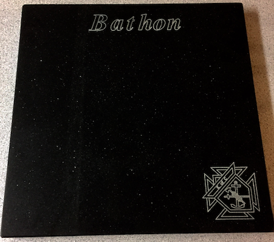

All net proceeds support intellectually disabled and special needs citizens through the Columbus Hope Foundation.
Download the order form or View Prices
All net proceeds support intellectually disabled and special needs citizens through the Columbus Hope Foundation.
Download the order form or View PricesThese 12" by 12" by 1" quality quartz custom stones are a beautiful addition to any home or kitchen. Beautiful finish and a wide range of uses.

Cheese Board

Food Serving Trivet

Commemorative Plaque
This year, we offer customized engraved logos and script. Create an heirloom for future generations! The picture below is an actual sample showing the Knights logo and 1 inch letters: 
(click the images for a more detailed view)

Bala Blue: Cambria quartz from Minnesota, comprised of durable natural stone with pigments and space age epoxy.

Carbon Black: Vicostone quartz from Germany comprised of durable natural stone with pigments and space age epoxy.

Have the K of C logo engraved on your stone

OR provide us with a .jpg of YOUR logo, and we will provide a quotation
Download the order form here
These beautiful stones are provided by Rozelle Stone Co., the leading stone fabricator in the Southeast.
John Rozelle joined the Knights of Columbus in April of 2013. Final engraving and finishing will be under the direction of George Brown (also a member of the Knights of Columbus since 2015), utilizing one of the most sophisticated machines in the industry—the Titan—manufactured by Park Industries in Minnesota.


Located in Greenville, SC, Rozelle Stone Company has served its clients in South Carolina, North Carolina, and Georgia for more than 20 years. We have installed thousands of stone projects: large, small, simple, complex, residential, and commercial. We bring the highest degree of commitment to each project.
Price for cutting stone in black: $60 ea.
Price for cutting stone in blue: $80 ea.
To add K of C logo: $28
Large Letters: (10 letters or less in 1" height): $21
(+$1 for every 2 additional letters)
Small Letters: (40 letters or less in 1/2" height): $31
(+$1 for every 2 additional letters)
Send YOUR logo for a quote:
Email: charlesbathon@gmail.com
Cell: (574)-261-2293
{kind=link}